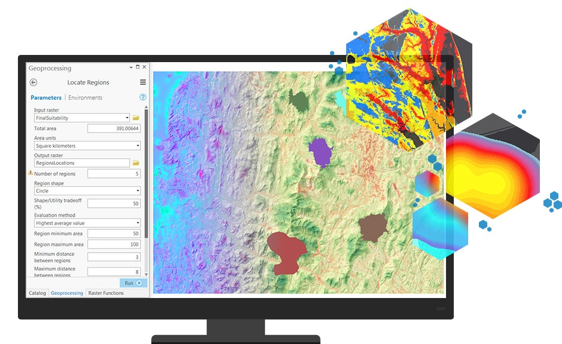

O župi
Mjesto Ledinac se već u srednjem vijeku spominje kao jedno od naselja Imotske krajine, na krajnjem istočnom rubu Imotskog polja. O životu ovoga mjesta svjedoči srednjovjekovna nekropola na staroj ilirskoj gomili, bogata stećcima raznih veličina i oblika. Mjesto je kroz povijest pripadalo župama Drinovci, zatim Ružići, potom Široki Brijeg te konačno, Rasno.
Župa Ledinac prvi put je utemeljena 1873. godine, a za patron župe uzet je Sveti Križ, po križu u ledinačkoj nekropoli. Međutim, Ledinac i Rasno nisu uspjeli riješiti gdje će biti sjedište župe, pa od 1878. godine, Ledinac i okolna sela se ponovno nalaze u sastavu župe Rasno.
Župa je definitivno utemeljena 3. listopada 1930., na osnovi odluke biskupa fra Alojzija Mišića, odvajanjem pojedinih sela od Gruda, Ružića i Rasna. Prvi župnik, don Ante Čule, počeo je graditi veliku crkvu, s namjerom da tu bude svetište svete Terezije od Djeteta Isusa za čitav ovaj kraj. Temelji nove crkve blagoslovljeni su 1939., ali Drugi svjetski rat omeo je radove. Tek 1967. počelo je uređenje unutrašnjosti te je dovršen zvonik. Crkva je obnovljena krajem devedesetih godina prošloga stoljeća, a vanjska fasada je urađena 2000. godine, a 2015. završen je i zvonik, onako kako je odavno projektom planiran, te je tako u potpunosti dovršena izgradnja crkve.
Novosti
Devetnica sv. Tereziji
Sretan i blagoslovljen Uskrs!
Svetoj Žrtvi uskrsnici dajte slavu krštenici!
Janje ovce oslobodi, Krist nas grešne preporodi.
Sa životom smrt se sasta i čudesna borba nasta:
Vođa živih pade tada i živ živcat opet vlada.
Uskrs je, najveći kršćanski blagdan u kojem slavimo pobjedu Isusa nad smrću.
U našoj župi pod obje mise je bilo svečano i mnoštvo svijeta.

Hodočašće mladih
Mladi iz župe sudjelovali su na hodočašću u Međugorju.

Obavijesti
Sv. Mala Terezija
Sveta Terezije od Djeteta Isusa i Svetoga lica rođena je kao Marija Franciska Terezija dana 2. siječnja 1873. u Alençonu u Normandiji, u Francuskoj, kao najmlađe od devetero djece Ljudevita i Zelije Martin, koji su također proglašeni svetima. U četvrtoj godini ostaje bez majke. U božićnoj noći 1884. doživjela je osobitu milost obraćenja, koja joj daje želju i snagu zaboraviti sebe i žarko moliti za duše. Svladavši sve zapreke, u 15. godini, protivno pravilima, a na dopuštenje pape Lava XIII., ulazi u samostan bosonogih karmelićanki u Lisieuxu, gdje je kao Terezija od Djeteta Isusa i Svetoga Lica proživjela svoj život u velikoj poniznosti, evanđeoskoj jednostavnosti i beskrajnom pouzdanju u Boga. Hranila ga je Svetim pismom, u kojem je otkrila svoj poziv i mjesto u Crkvi. Živjela ga je sa svom vjernošću te primjerom i riječju poučavala novakinje vrijednosti najmanjih stvari učinjenih iz ljubavi, a ne zbog stjecanja zasluga. Glasovite su njene riječi: „Napokon sam našla svoje zvanje! Moje je zvanje ljubav!… U srcu Crkve, svoje majke, bit ću ljubav. Tako ću biti sve.“
Prikazavši svoj život za spasenje duša i proširenje svete Crkve, umrla je od tuberkuloze 30. rujna 1897., obećavši da će provesti svoje nebo čineći dobro na zemlji. Njezin put ''duhovnog djetinjstva'', obavljanje redovitih svakodnevnih dužnosti s velikom ljubavlju, prihvaćanje Božje bezuvjetne milosrdne ljubavi u svakom trenutku života, beskrajno pouzdanje i predanje u tami vjere, našao je put do ljudskih srdaca i do svih krajeva svijeta te su je pape nazvale ''najvećom sveticom modernih vremena''.
Papa Pio XI. proglasio ju je blaženom 29. travnja 1923. u Rimu, a svetom 17. svibnja 1925. također u Rimu, te zaštitnicom misija 14. prosinca 1927. Njezin autobiografski spis Povijest jedne duše, koji je pisala po želji svojih poglavara, uz nekoliko pisama, pjesama, igrokaza, molitava i Posljednji razgovori imali su toliki utjecaj na duhovnost Crkve da ju je papa Ivan Pavao II. proglasio 19. listopada 1997. naučiteljicom Crkve. Njezine relikvije od devedesetih godina prošloga stoljeća putuju svijetom, a inače su izložene u bazilici podignutoj njoj u čast u Lisieuxu.
Nazivaju je i ''sveticom ruža'' i njezin svetački atribut u ikonografiji jesu ruže, zbog njenog obećanja da će poslije smrti obasuti zemlju kišom nebeskih ruža, tj. milosti i uslišanja. Papa Benedikt XV. darovao joj je 1920. ''pozlaćenu ružu'', a njezino ime nose i pojedine vrste ruža. Suzaštitnica je Francuske, misija i letača, a štovatelji joj se utječu u svim potrebama.
Groblja u župi
Kontakt
Adresa: Ledinac 103, 88 340 Grude
Email: ivan.marcic@yahoo.com
Telefon: +387 39 675 115